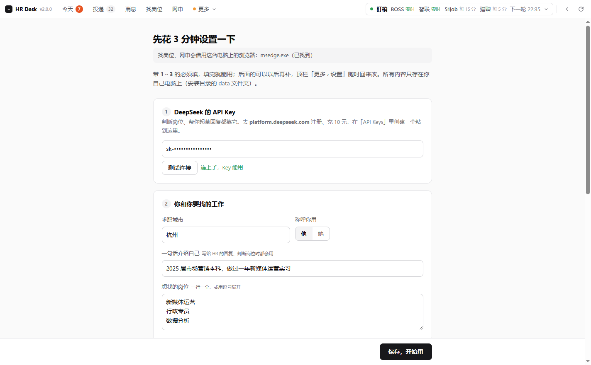
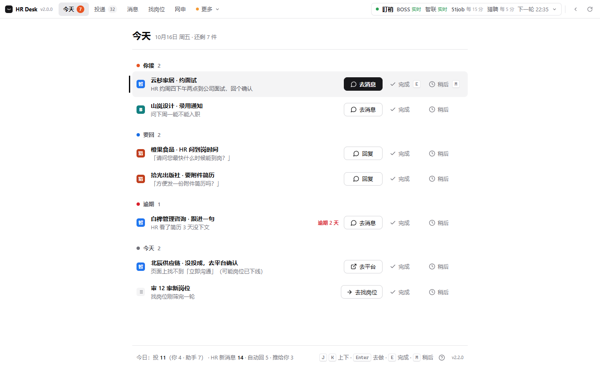
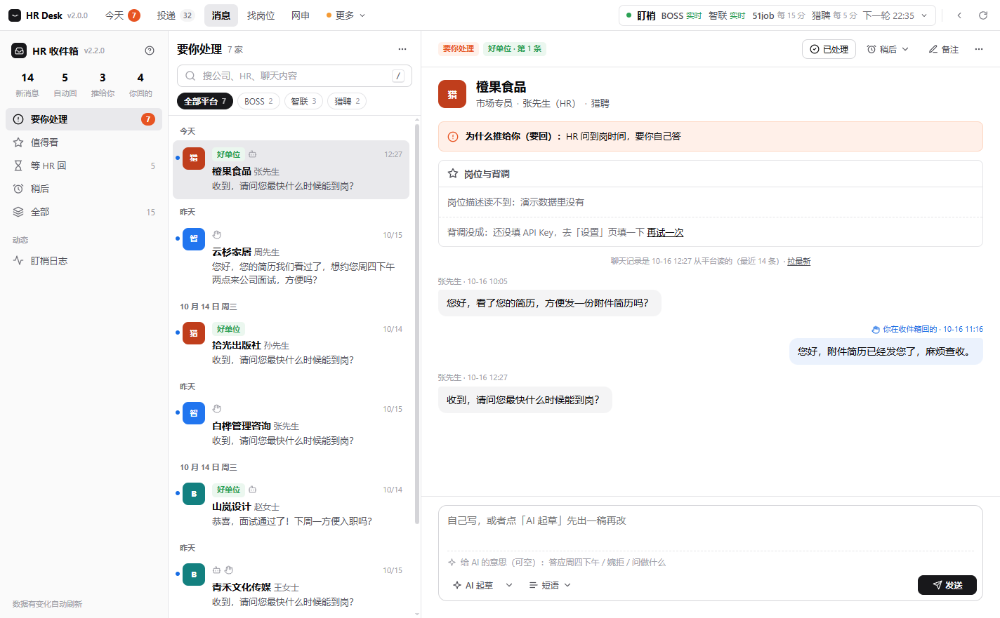
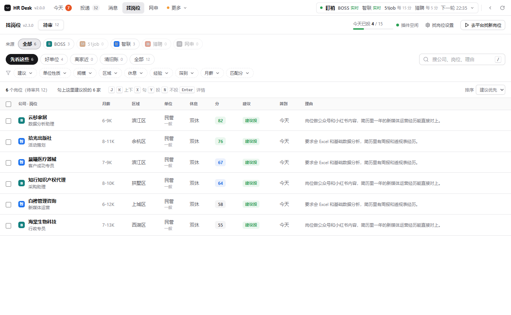
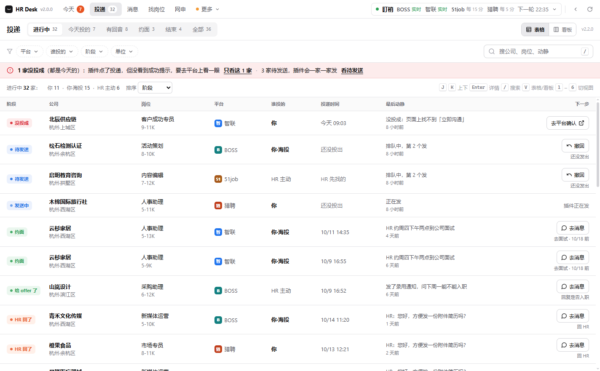
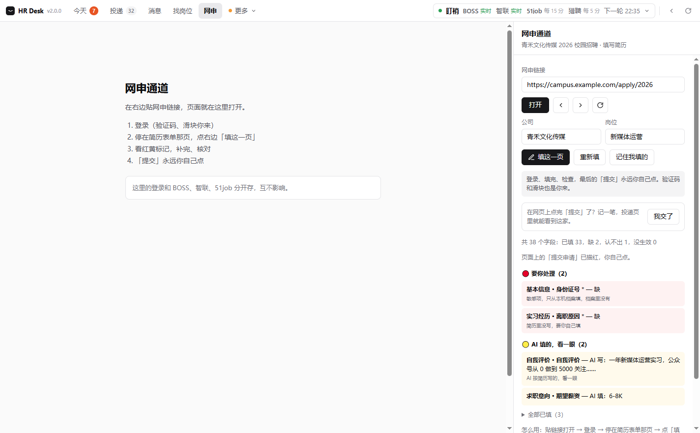

求职助手 · 使用教程
v2.0.0。一个 Windows 桌面软件：今天该办的事、投过的每一家、HR 的消息、筛岗位、填网申，都在一个窗口里。会发出去的东西（打招呼、回 HR、网申提交），默认都要你点一下才发。
1. 安装（2 分钟）
- 在 GitHub 页面右边的 Releases 里下载
jobhunter-v2.0.0-win64.zip。 - 解压到一个固定的位置，比如
D:\求职助手。之后这个文件夹别删、别挪，你的设置和登录状态都存在它下面的data里。 - 双击
HR Desk\HR Desk.exe。第一次打开会在桌面放一个「求职助手」图标，以后双击它就行。
2. 第一次设置（5 分钟）
第一次打开先出来的是设置页。以后可以从顶栏 更多 › 设置 回来改。
| ① API Key | 去 platform.deepseek.com 注册，充 10 元，在「API Keys」里创建一个 Key 粘进来，再点「测试连接」。判断岗位、起草回复都靠它。 |
|---|---|
| ② 你和工作 | 求职城市、怎么称呼你（他 / 她）、一句话介绍自己（比如「2025 届市场营销本科，做过一年新媒体运营」）、想找的岗位（一行一个）。 |
| ③ 简历 | 全文粘贴，或者点「从文件读」选一个 .txt。点「解析简历」以后，网申自动填会更准（这一步可以不做）。 |
| ④ 求职标准 | 选填，但建议写。判断投不投时会照这个来，比如「必须双休；不去外包、电销；通勤 40 分钟以内」。期望薪资是 HR 问起时用的。 |
| ⑤ 更多 | 作品集网址、拉黑的公司、给 HR 的微信号、Telegram 提醒（有约面这类事会推到手机）。都可以空着。 |
| Telegram | 用 @BotFather 建一个 bot 拿到 Token；Chat ID 找 @userinfobot 问。填完先在 Telegram 里给自己的 bot 发一条 /start，不然它没法主动给你发消息。国内连不上 Telegram，要在「代理地址」里填你代理软件的地址（比如 http://127.0.0.1:7890，端口看你自己的代理软件），不填就推不出去。 |

登录各个平台
点顶栏 更多，依次打开 BOSS 直聘、智联、51job、猎聘，在里面各扫码登录一次就行，别的地方都不用登。登录状态会保存在本机，以后不用再登。哪个平台掉了登录，右上角的状态条会变红，并告诉你是哪个。
3. 顶栏怎么看
| 今天 | 打开软件默认停在这一页。数字是今天要办几件；变成橙色说明有要你亲自接的事（比如约面），或者有事已经逾期了。 |
|---|---|
| 投递 | 数字是进行中的家数。 |
| 消息 | HR 的聊天。 |
| 找岗位 | 等你审的岗位。 |
| 网申 | 填官网网申表。 |
| 更多 ▾ | BOSS 直聘 / 智联 / 51job / 猎聘 / 企查查的网页，还有「设置」。哪个平台没登录，会在这里标出来。 |
| 右边状态条 | 后台在盯哪几个平台：「实时」表示新消息马上就能收到，「每 5 分 / 每 15 分」表示隔一会儿看一次，后面写着下一轮几点。点开可以「立即扫一轮」或「暂停」。整条变红就是出了问题，上面会写怎么办。 |
快捷键：Ctrl+1～5 切前五个标签。列表页里 J / K 上下移动，E 标完成，M 稍后再看，/ 搜索。
4. 每天怎么用
① 先看「今天」
只放要你动手的事，从上到下分四组：你接（约面、要电话或微信，得你本人来）→ 要回（HR 回了话等你回复）→ 逾期 → 今天。每一条右边都有按钮直接去办（「去消息」「去平台」）；办完点「完成」，想晚点再说就点「稍后」。全部清空会显示「今天的事都办完了」。

② 回 HR：「消息」
左边是分组，中间是会话，右边是聊天记录。可以自己写回复，也可以点「AI 起草」先出一稿再改；按 Ctrl+Enter 发送，发出后 5 秒内还能撤销。对于普通问题，后台会照你的设置自动回；碰到约面、要联系方式这类事，一律交给你。

③ 投新岗位：「找岗位」
点「去平台找新岗位」，它会按你填的岗位关键词去 BOSS、51job、智联上筛一轮，结果排进「待审」。每家都写了「投 / 等你定 / 不投」和理由。勾上你要投的，按「投这 N 家」，它会一家一家地发，两家之间隔一会儿。

④ 看进度：「投递」
所有平台、所有方式投出去的都在这一张表里。默认显示「进行中」，可以切成看板；点某一家，右边会展开它的时间线和聊天入口。投失败的标着「没投成」，可以再投一次，或者去平台上确认。

⑤ 官网网申：「网申」
- 在右边贴网申链接，打开后登录。
- 停在填简历的那一页，点「填这一页」。红色的是要你自己处理的，黄色的是 AI 填的，看一眼对不对。
- 检查完了自己点网页上的「提交」，再回来点「我交了」，这家就会记进投递表。
你手动补填的内容，点「记住我填的」，下一份网申会自动填上。

5. 一定要知道的
- 在 BOSS 上点「投」的时候，BOSS 会先自动发出你账号里设置的默认招呼语，然后才发它写的开场白。所以先去 BOSS 把默认招呼语改成你能接受的。
- 你的东西都存在安装目录下的
data文件夹里，不会上传到任何服务器。AI 判断时，会把岗位信息和你的简历发给 DeepSeek。 - 花费：用 DeepSeek 筛一个岗位大约一两分钱（按官方价估算）。
- AI 的判断只能当参考。公司靠不靠谱，投之前自己再看一眼。「消息」页里有背调，能查参保人数、经营异常和风险。
- 点窗口右上角的 × 只是把软件收到右下角托盘，后台照常盯着消息。要真退出，右键托盘图标选「退出」。
6. 常见问题
状态条一直是红的
点开状态条看是哪个平台。大多是登录掉了：去 更多 里打开那个平台，重新扫码登录，再点「立即扫一轮」。
「找岗位」点了没反应，或者提示没找到浏览器
说明电脑上没找到 Chrome 或 Edge。装一个 Chrome，然后重开软件。
扫 51job 时弹出一个 51job 登录窗口
后台筛 51job 用的是另一个看不见的浏览器，它会自动沿用你在软件里登录的 51job。偶尔网站不认这份登录，就会弹出这个窗口。你在里面登录好、把窗口关掉，再点一次「去平台找新岗位」就行。
测试连接失败
写着「认证失败」，是 Key 没复制全；写着「余额」，是 DeepSeek 账户需要充值。
换电脑 / 重装
把整个安装文件夹（连同 data）拷过去就行。只想要一个干净的新开始，就删掉 data。
旧版插件还能用吗
能。旧版在 GitHub 的 v1 分支和 v1.1.0 标签里，照旧版教程装进 Chrome 就行。